Releases Matching
Vadim Markovtsev
Head of Analytics
Do you mean...
- 🤔 Which pull requests were released?
- 🤔 Which JIRA issues were released?
- 🤔 What's your PR release time?
- 🤔 What's your release frequency, etc.?
How can we release?
Release == commit pointer + meta.
- Create a Git tag.
- Merge
master to production.
- Send Athenian a commit pointer.
Release by tag
🏷1.1.0 released PR X.
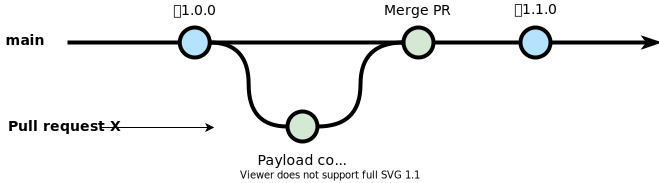
Release by branch
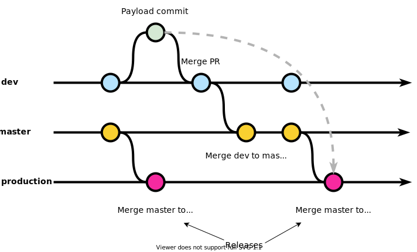
Requirements
- Automatic inference of the release process.
- Support changing release settings.
- Incredible, astounding, marvellous performance.
- Correctness.
- Map to JIRA issues.
Ambiguity
Match release branch: master|production
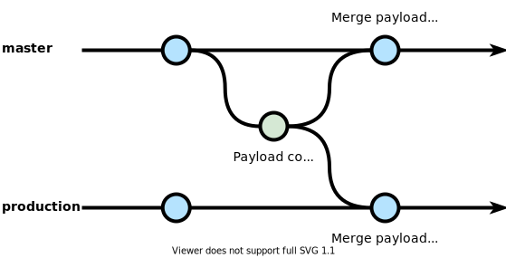
Plan
- Discover release commits.
- Analyze release ownership.
- Match to PRs.
independent of the Heater
Discover release commits
- Tags, events: obvious.
SELECT FROM github.api_releases
- Branches: follow the first parent from the matching branch heads.
- Automatic: look for tags in
(time_from - Δ, time_to + Δ),where Δ =3 weeks.
- Hence, it depends on
time_from, time_to
Analyze release ownership
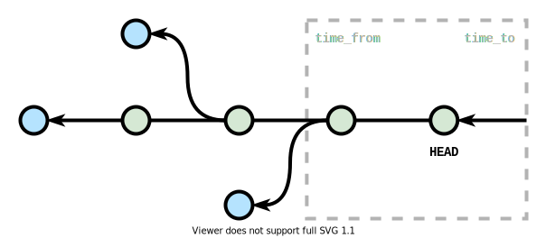
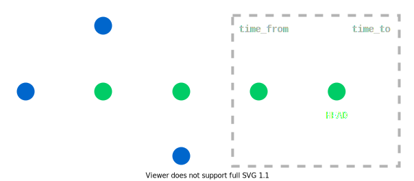
Match to PRs - rebases
"Merge pull request #1841 from athenianco/fix-pr-dep-dupes"
False positives: <0.1%.
Empty merge commits are sometimes discarded 😭
Doesn't work for squashes 😭
Building the commit DAG
- Recursive SQL:
github.node_commit_edge_parents.(parent|child)_id
- Stop hashes. Pick maximum 25 equidistant first parents and cut.
- Stop heads. Take maximum 25 known DAG entries.
- One of the reasons why we suck at monorepos.
- Account for the eventual consistency:
- If
(parent|child)_id does not exist in github.node_commit, abort mission.
Building the commit DAG
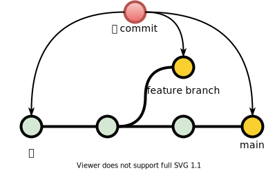
Python for Athenian API
- 😄High quality libraries: numpy.
- 😅Rapid development libraries: pandas.
- 🤩Excellent coroutines support.
- 🤬Interpreter sucks: slow, Global Interpreter Lock.
- 🧐Powerful introspection => powerful profiling.
- 👽The fastest code is native code.
Python + C/C++ = Cython
@cython.boundscheck(False)
@cython.wraparound(False)
cdef void _copy_parents_to_array(const vector[vector[uint32_t]] *parents,
uint32_t[:] output,
int64_t[:] splits) nogil:
cdef int64_t i, offset = 0
for i in range(<int64_t>parents.size()):
vec = dereference(parents)[i] # (*parents)[i]
memcpy(&output[offset], vec.data(), 4 * vec.size())
offset += vec.size()
splits[i] = offset
Athenian DAG format
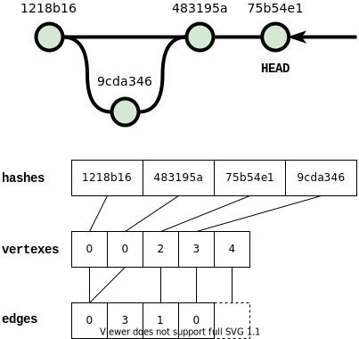
Athenian DAG format
DAG = (hashes, vertexes, edges)
For N commits with E parent-child relations:
hashes is a byte array of size Nx40, sorted by first axisvertexes is an uint32 array of size (N + 1)edges is an uint32 array of size E- Parent-children direction is inverted compared to Git-speak.
Athenian DAG format advantages
- 💪Memory footprint is minimal.
- 💪Data locality => DAG fits in L2/L3 cache.
- 💪Zero-copy, uniform usage in Python and Cython.
- 💪Fast enough O(log(N)) lookups.
- numpy has
searchsorted - vectorized binary search.
- 💪DAG traversals rely on integer arrays
vertexes and edges.
- 💪Inserting new commits is efficient O(N).
Precomputed tables
github.commit_historygithub.release_match_spansgithub.releasesgithub.release_facts
Everything related to releases has release_match in PK.
Thank you, and see you tomorrow